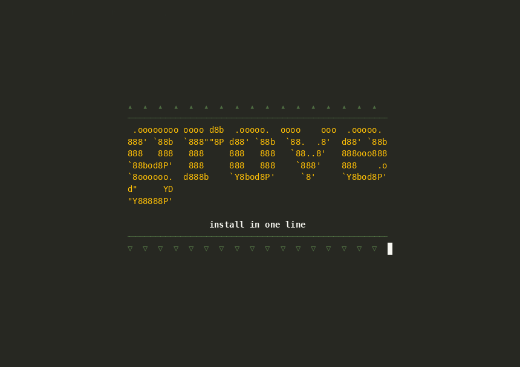
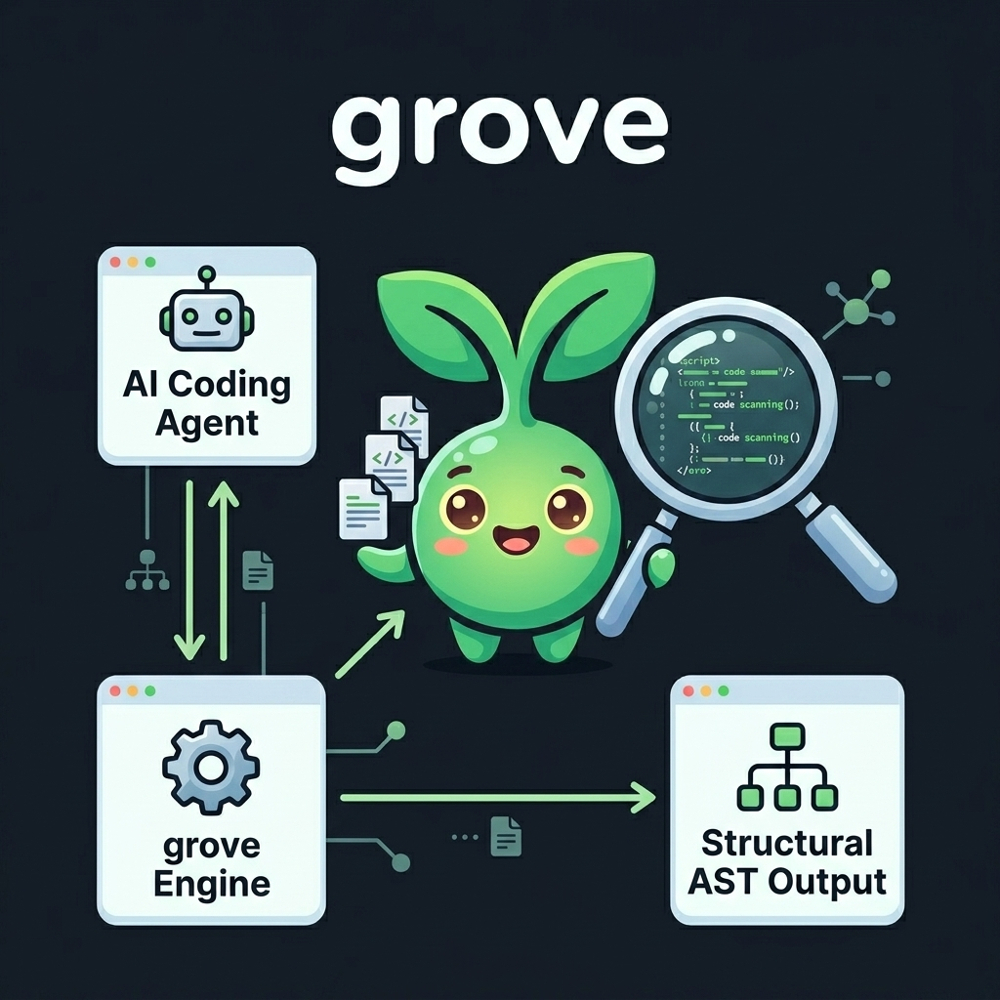
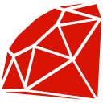

One binary to give any coding agent byte-precise, AST-aware tools for any codebase. Stop burning tokens on whole-file reads and regex grep.
Leaner Context, Same Answers
WASM Grammars
CLI + MCP Server
Watch an agent answer structural questions with Grove — zero grep, zero whole-file reads.

Agents burn tokens and round-trips grepping and reading whole files to answer structural code questions. Grove replaces that with one symbol at a time.
Outline a 2,000-line file into a compact skeleton. Retrieve exact symbol bodies via source without dumping entire files into context.
Every query carries a stable symbol-id handle (<lang>:<path>#<name>@<line>) that the agent passes forward across turns.
The same static Rust binary drives both a developer human CLI (grove <verb>) and an agent MCP server (grove serve).
Organized around the 6 phases of an agent's working loop: Orient, Find, Read, Locate, Trace, and Verify.
Generates a file definition skeleton. Gives the agent structural overview without reading whole files.
class Server 12:0 py:src/server.py#Server
def __init__ 14:4 py:src/server.py#Server.__init__
def handle_request 31:4 py:src/server.py#Server.handle_request
def main 88:0 py:src/server.py#mainNot an LSP. Grove is the cheap syntactic layer beneath where an LSP's semantics begin — complementary, not competitive.

Grove holds answer quality while carrying ~2× less context than text search — up to 2.8× on the hardest cross-cutting traces. Real agent prompts from is-grep-enough: 50 blind-judged tasks across 10 large repos, three arms. Watch each one roll, metric by metric.
 tokio
tokio-rs/tokio
01 / 06
tokio
tokio-rs/tokio
01 / 06
…
n=1 per cell — directional, not significant. Combined score = ½ answer quality (grounding + completeness) + ½ billed cost, ranked per task. Main agent Sonnet, subagents Haiku. Full evaluation & method →
Grove holds ~2× less context at tied answer quality — and the lead widens with difficulty: 2.8× leaner on L5 cross-cutting traces (TypeScript L5: 2.43M → 570K tokens). That's the budget that decides whether a trace fits the window at all.
Quality ties on average, but at L5 text search drifts — baseline grounding falls to 0.94 (0.80 on the Bitcoin C++ trace). Grove holds 0.98, parsing the real syntax tree instead of guessing line numbers.
Grep wins turns, wall-clock and billed dollars — cache-reads are cheap, so a big transcript isn't a big bill. LSP leads tool-call economy but pays a warm-up (46 min to index Redis). Grove wins the context budget, zero-compile.
Official Tree-sitter WASM grammars loaded dynamically from a hosted registry.
 Python Rust
Python Rust C++
C++ C
C C#
C#
Ruby PHP
PHP JavaScript
JavaScript OCaml
OCaml CSS
CSS HTML
HTML Julia
Julia